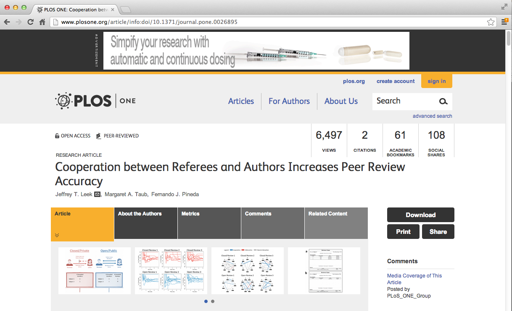

Jeffrey Leek
Johns Hopkins Bloomberg School of Public Health

http://www.plosone.org/article/info:doi/10.1371/journal.pone.0026895
if(!file.exists("./data")){dir.create("./data")}
fileUrl1 = "https://dl.dropboxusercontent.com/u/7710864/data/reviews-apr29.csv"
fileUrl2 = "https://dl.dropboxusercontent.com/u/7710864/data/solutions-apr29.csv"
download.file(fileUrl1,destfile="./data/reviews.csv",method="curl")
download.file(fileUrl2,destfile="./data/solutions.csv",method="curl")
reviews = read.csv("./data/reviews.csv"); solutions <- read.csv("./data/solutions.csv")
head(reviews,2)
id solution_id reviewer_id start stop time_left accept
1 1 3 27 1304095698 1304095758 1754 1
2 2 4 22 1304095188 1304095206 2306 1
head(solutions,2)
id problem_id subject_id start stop time_left answer
1 1 156 29 1304095119 1304095169 2343 B
2 2 269 25 1304095119 1304095183 2329 C
names(reviews)
[1] "id" "solution_id" "reviewer_id" "start" "stop" "time_left"
[7] "accept"
names(solutions)
[1] "id" "problem_id" "subject_id" "start" "stop" "time_left" "answer"
mergedData = merge(reviews,solutions,by.x="solution_id",by.y="id",all=TRUE)
head(mergedData)
solution_id id reviewer_id start.x stop.x time_left.x accept problem_id subject_id
1 1 4 26 1304095267 1304095423 2089 1 156 29
2 2 6 29 1304095471 1304095513 1999 1 269 25
3 3 1 27 1304095698 1304095758 1754 1 34 22
4 4 2 22 1304095188 1304095206 2306 1 19 23
5 5 3 28 1304095276 1304095320 2192 1 605 26
6 6 16 22 1304095303 1304095471 2041 1 384 27
start.y stop.y time_left.y answer
1 1304095119 1304095169 2343 B
2 1304095119 1304095183 2329 C
3 1304095127 1304095146 2366 C
4 1304095127 1304095150 2362 D
5 1304095127 1304095167 2345 A
6 1304095131 1304095270 2242 C
intersect(names(solutions),names(reviews))
[1] "id" "start" "stop" "time_left"
mergedData2 = merge(reviews,solutions,all=TRUE)
head(mergedData2)
id start stop time_left solution_id reviewer_id accept problem_id subject_id answer
1 1 1304095119 1304095169 2343 NA NA NA 156 29 B
2 1 1304095698 1304095758 1754 3 27 1 NA NA <NA>
3 2 1304095119 1304095183 2329 NA NA NA 269 25 C
4 2 1304095188 1304095206 2306 4 22 1 NA NA <NA>
5 3 1304095127 1304095146 2366 NA NA NA 34 22 C
6 3 1304095276 1304095320 2192 5 28 1 NA NA <NA>
Faster, but less full featured - defaults to left join, see help file for more
df1 = data.frame(id=sample(1:10),x=rnorm(10))
df2 = data.frame(id=sample(1:10),y=rnorm(10))
arrange(join(df1,df2),id)
id x y
1 1 0.2514 0.2286
2 2 0.1048 0.8395
3 3 -0.1230 -1.1165
4 4 1.5057 -0.1121
5 5 -0.2505 1.2124
6 6 0.4699 -1.6038
7 7 0.4627 -0.8060
8 8 -1.2629 -1.2848
9 9 -0.9258 -0.8276
10 10 2.8065 0.5794
df1 = data.frame(id=sample(1:10),x=rnorm(10))
df2 = data.frame(id=sample(1:10),y=rnorm(10))
df3 = data.frame(id=sample(1:10),z=rnorm(10))
dfList = list(df1,df2,df3)
join_all(dfList)
id x y z
1 6 0.39093 -0.16670 0.56523
2 1 -1.90467 0.43811 -0.37449
3 7 -1.48798 -0.85497 -0.69209
4 10 -2.59440 0.39591 -0.36134
5 3 -0.08539 0.08053 1.01247
6 4 -1.63165 -0.13158 0.21927
7 5 -0.50594 0.24256 -0.44003
8 9 -0.85062 -2.08066 -0.96950
9 2 -0.63767 -0.10069 0.09002
10 8 1.20439 1.29138 -0.88586